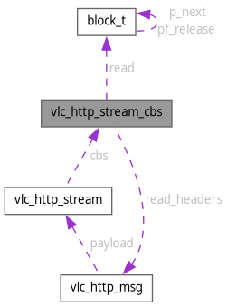

vlc_http_stream_cbs Struct Reference
HTTP stream callbacks. More...
#include <message.h>
Collaboration diagram for vlc_http_stream_cbs:

Data Fields | |
| struct vlc_http_msg *(* | read_headers )(struct vlc_http_stream *) |
| struct block_t *(* | read )(struct vlc_http_stream *) |
| void(* | close )(struct vlc_http_stream *, bool abort) |
Detailed Description
HTTP stream callbacks.
Connection-specific callbacks for stream manipulation
Field Documentation
◆ close
| void(* vlc_http_stream_cbs::close) (struct vlc_http_stream *, bool abort) |
Referenced by vlc_http_stream_close().
◆ read
| struct block_t *(* vlc_http_stream_cbs::read) (struct vlc_http_stream *) |
Referenced by vlc_http_stream_read().
◆ read_headers
| struct vlc_http_msg *(* vlc_http_stream_cbs::read_headers) (struct vlc_http_stream *) |
Referenced by vlc_http_stream_read_headers().
The documentation for this struct was generated from the following file:
- modules/access/http/message.h
Generated by